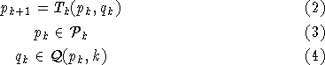
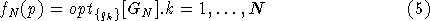
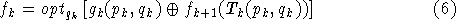
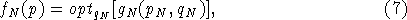

The problem can be stated as:
Find a sequence of decisions such that an objective funcion is optimized. Mathematically:

subject to:

Define the following functional:

Applying Bellman's principle of optimallity , we obtain:

with

where is a binary operator.
It can be seen, therefore, that a Discrete dynamic problem can be defined stating: